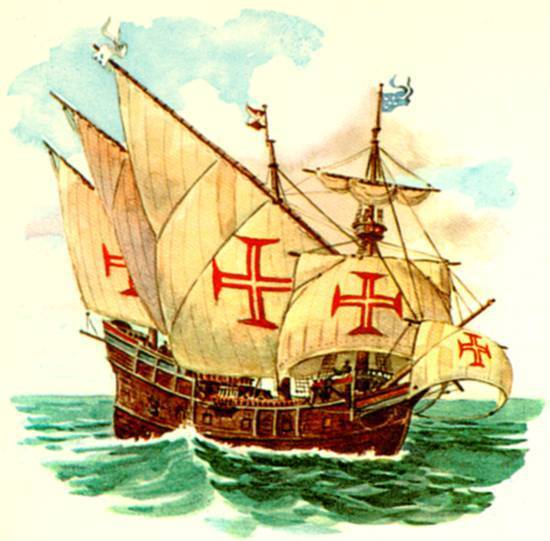
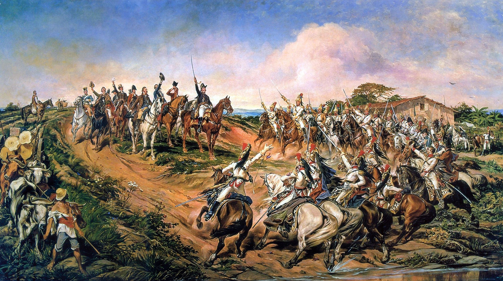
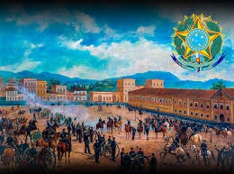

História do Brasil
A História do Brasil é marcada por processos de conquista, colonização, lutas sociais e transformações políticas que moldaram o país ao longo de mais de cinco séculos. Desde antes da chegada dos portugueses, o território brasileiro já era habitado por diversos povos indígenas, com culturas, línguas e modos de vida próprios.
Brasil Pré-Colonial (antes de 1500)
Antes da chegada dos europeus, o Brasil era habitado por milhões de indígenas, organizados em diferentes povos, como os tupis, guaranis, jês e carajás. Eles viviam da caça, pesca, agricultura e coleta, mantendo uma relação equilibrada com a natureza.

Colonização Portuguesa (1500 – 1822)
Em 1500, os portugueses chegaram ao território brasileiro, dando início à colonização. Nos primeiros anos, o interesse principal era a exploração do pau-brasil. Com o tempo, Portugal passou a investir na produção de açúcar, utilizando mão de obra escravizada, principalmente de africanos trazidos à força.
Período Imperial (1822 – 1889)
Em 1822, o Brasil tornou-se independente de Portugal, sob o comando de Dom Pedro I. O país passou a ser uma monarquia, governada por imperadores. Durante o Segundo Reinado, com Dom Pedro II, o Brasil teve avanços na economia e na educação, mas manteve a escravidão até 1888, quando foi abolida com a Lei Áurea.
República e Brasil Contemporâneo (1889 – atualidade)
Em 1889, o Brasil deixou de ser uma monarquia e tornou-se uma república. Desde então, o país passou por diferentes fases, como a República Velha, a Era Vargas, o regime militar e a redemocratização. Atualmente, o Brasil é uma república democrática, marcada por diversidade cultural, desafios sociais e constantes transformações políticas e econômicas.
